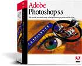
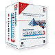

| |
|
| |
The DoHistory Web site was
developed and maintained by the Film
Study Center at Harvard University and is hosted and maintained by the Roy Rosenzweig Center for
History and New Media, George Mason University.
|
| |
|
| Funders
|
| |
Major
funding provided by:
|
|
|
| Additional funding
provided by: |
|
|
Virginia
Wellington Cabot Foundation |
| |
|
| Credits
|
| |
Principal
Investigator: |
Richard
P. Rogers |
| |
Producer: |
Kristi
Barlow |
| |
Editorial
Director: |
Laurie
Kahn-Leavitt |
| |
History
& Education Consultant: |
Judith
Moyer |
| |
Designer/Art
Director: |
Juliet
Jacobson |
| |
Associate
Producer: |
Cecil
Esquivel |
| |
Production
Staff: |
R.
Alan Leo Jr., Abby Branch |
| |
Perl/Java
programmers: |
Bijoyini
Chatterji, Ricardo Guzman, Yuri Ostrovsky, Binoy Samuel, Shawn Samuel, Jun
Shen, Andy Sisson |
| |
Photographers: |
Dana
Salvo, Steve Borack |
| |
Photography
Coordinator: |
Hua
Dong |
| |
Graphics
Production: |
Robin
Marlowe |
| |
Illustrator: |
R.
P. Hale |
| |
General
Assistants: |
Melissa
Chu, Shannon Densmore, Melinda Kelson, Makambo Tshionyi, Alex Olch, Pilapa
Esara, Lauren Klein |
| |
Transcribers: |
Michael
Barr, Courtney Ellis, Shira Feldman, Jesse Kean, Elizabeth Makrides, Andy
Sisson, Jennifer Shin, Rob Chan |
| |
Graduate Research Assistant for Sustainability: |
Savannah Scott |
Advisory
Board
|
| |
Laurel Thatcher Ulrich
Edward Ayers
George Brackett
Nancy Cott
Glorianna Davenport
David Durlach
Stanley Katz
Robert Lavelle
Judith W. Leavitt
Maragaret Muir
Stephen Nissenbaum
Christopher Pullman
Alan Taylor
|
| Special
Thanks To |
|
Alfred A. Knopf Publishers
& Anne McCormick
American Numismatic Society
The Trustees of the Boston Public Library
The Commonwealth of Massachusetts Archives & Elizabeth C. Buvier,
Mike Cuomo
Francis A. Countway Library of Medicine, Harvard University
Edie Harry
Harvard Extension School & Henry Leitner
Hubbard Free Library, Hallowell, Maine & Samuel Webber
Kennebec County Courthouse, Augusta, Maine
Kennebec Historical Society
The Library of Congress
Lincoln County Courthouse, Wiscasset, Maine
Maine Humanities Council & Dorothy Schwartz
Massachusetts Art Commission
Massachusetts Historical Society, & Peter Drummey
Robert R. McCausland and Cynthia MacAlman McCausland
Maine Historical Society & Stephanie Philbrick
Maine State Archives & Anthony Douin
Maine State Library & Gary Nichols
State Judicial Court of Massachusetts, Archive and Record Preservation
Sorenson Vision, Inc.
|
| Software
Used to Build this Site |
|
| UserLand
Frontier |
|
|
Bare Bones Software BBEdit
|
|
| Adobe Photoshop |
 |
| Equilibrium
DeBabelizer |
 |
Macromedia
Dreamweaver, Fireworks,
Flash
Shockwave |
|
| Filemaker
Pro |
|
Kodak PhotoCD
PhotoCD Pro |
|
Apple QuickTime,
Media Cleaner Pro,
Sorenson Video Codec |
|
| MacOS |
 |
©
Copyright 2000 by the President and Fellows of Harvard College.
All rights reserved. Rights and Use Information.
|